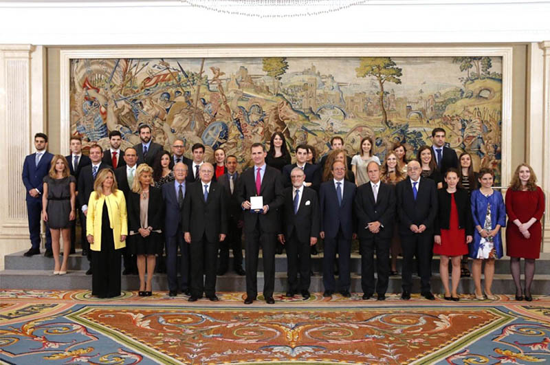
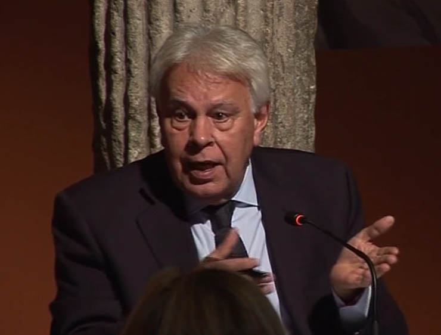
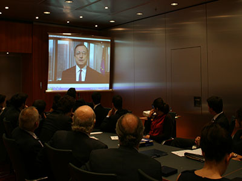
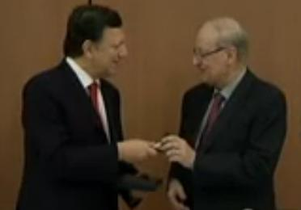

15/02/18 Acto de Homenaje a la Transición democrática española, bajo la presidencia de D. Javier Solana Madariaga, ex Ministro de Asuntos Exteriores, exSecretario general de la OTAN, primer Sr. PESC de la Unión Europea
El homenaje se centró en siete destacadas personalidades aragonesas de la Transición




